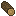
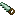

Support Beams & Collapses
梁
TerraFirmaCraft では、石は不安定で 崩落 の影響を受けやすくなります。 石、鉱石、滑らかな石、石柱 などの多くの岩のブロックはすべて、地面の下で頭の上に降り注ぐ可能性があります。
梁 を使用すると、崩落の発生を防ぐことができます。
プレイヤーが 補強されていない石 の近くにある石ブロック を 採掘すると、崩壊が発生する可能性があります。 ただし、一度崩落が始まると、 補強されている ブロックでも崩落が始まる可能性があります。
洞窟の屋根にある岩は 自然補強 されています。 岩石の下に崩壊不可能な岩盤があるものも 補強 です。 あるいは、梁 を使用すると、一度に広範囲を補強できます。
When graded Ore (ore that can be poor, normal, or rich) collapses, it degrades in quality. Rich ore will become normal, normal will become poor, and poor will turn to cobblestone. Mineral ores will turn into cobblestone right away.
Dirt, grass, clay, gravel, cobblestone, and sand are also affected by gravity. However, unlike vanilla gravity blocks, these blocks fall down slopes, and cannot be stacked more than one high without supporting blocks around. Ore Deposits also landslide, but do not degrade in quality.
梁




まず、ノコギリ と任意のタイプの 丸太 を使用して 梁 を作成できます。
梁 を使用すると、高さ 3 までの列が配置されます。 状態を維持するには、その下にしっかりしたブロックが必要です。
Multiblock
上の図のように、水平 梁を間に配置して、5 ブロック以内にある 2 つの 垂直 梁を接続できます。
水平梁 のみが、近くのブロックを 補強 します。 水平梁を中心とする 9 x 5 x 9 エリア内のブロックはすべて 補強されている とみなされます。
水平梁によって支えられることに加えて、岩は別の岩など、その下に固体ブロックがあると自然サポートされます。 ただし、階段 や ハーフブロック などの 非固体ブロック や、滑らかな石 は、 補強ブロックとしてカウントされません。
彫刻
最後に、彫刻 は、石 に対して実行される場合、採掘と同様に簡単に崩落を引き起こす可能性があることを知っておくことが重要です。 ノミを使用することは近くで崩落を引き起こす可能性があります。
安全な採掘を実践してください!